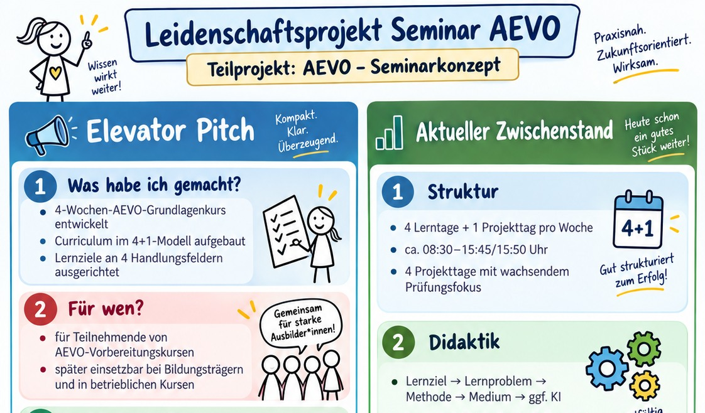
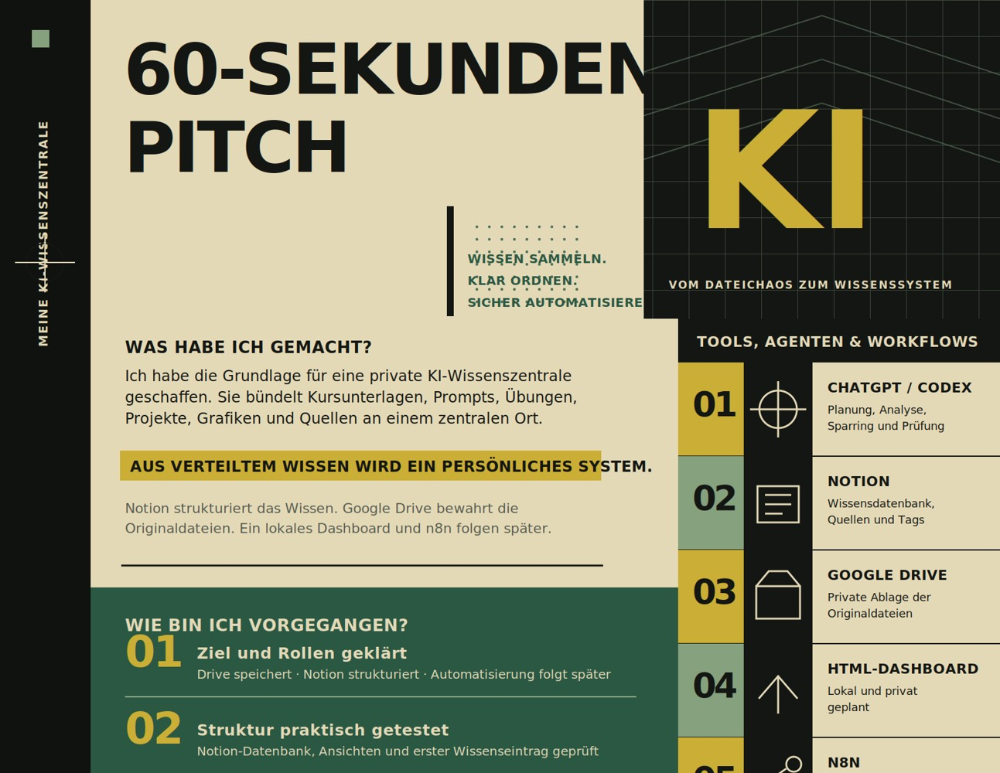
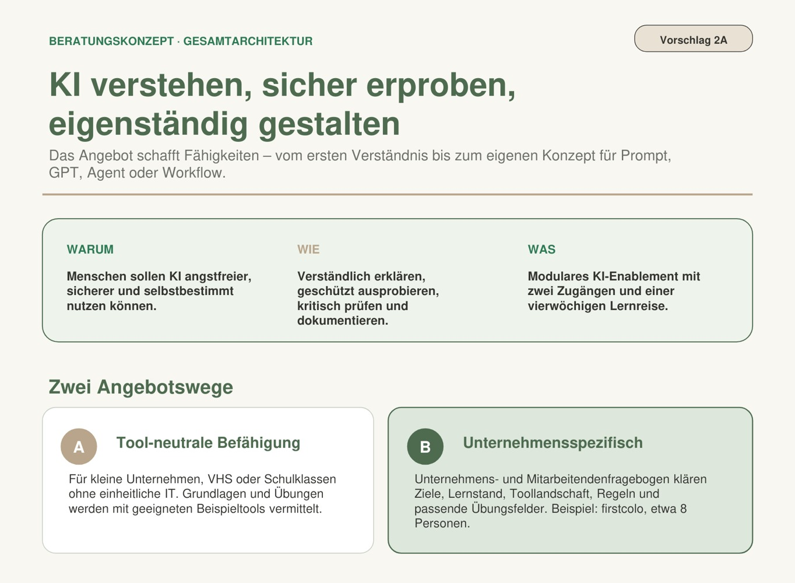

Menschen & Entwicklung
Berufliche Orientierung, Qualifizierungsbedarfe, Ausbildung, Einarbeitung und Begleitung beim Einstieg in neue Aufgaben.
Sandra Krämer
Ich arbeite gerne dort, wo viele Informationen, Anforderungen oder unterschiedliche Interessen zusammenkommen. Ich sortiere, hinterfrage und entwickle daraus Lösungen, mit denen Menschen im Arbeitsalltag tatsächlich etwas anfangen können.
Mein beruflicher Weg führt dabei von Beratung, Qualifizierung und Prozessarbeit bis zu meinen heutigen Projekten rund um Lernen, Digitalisierung und KI.
Bei meinen eigenen Projekten kommen Testen, Hinterfragen und Weiterentwickeln dazu.
Berufliche Orientierung, Qualifizierungsbedarfe, Ausbildung, Einarbeitung und Begleitung beim Einstieg in neue Aufgaben.
Wissen verständlich aufbereiten, Einarbeitung und Qualifizierung unterstützen sowie eigene Lernformate entwickeln.
Abläufe strukturieren, Informationen und Schnittstellen ordnen und praktikable Arbeitsstrukturen entwickeln.
Generative KI praktisch erproben und für Lernen, Wissensmanagement und Arbeitsprozesse nutzbar machen – mit Prompt Engineering, GPTs und Workflows.
Wissen & Prozesse
Organisation & Workshops
Entwicklung & Beratung
Struktur & Koordination
Diese Art zu arbeiten ist geblieben. Neu sind einige der Werkzeuge und Themen, mit denen ich mich beschäftige. In meinen eigenen Projekten verbinde ich Erfahrungen aus Lernen, Qualifizierung, Organisation und Prozessarbeit mit generativer KI.

Eigenprojekt · Konzept & GPT-MVP entwickelt
Wie kann Prüfungsvorbereitung mehr sein als das Lernen von Prüfungswissen?
Ich entwickle ein eigenes AEVO-Lernsystem aus Seminarkonzept, betreuten Projekttagen und einem KI-gestützten Lern- und Prüfungssparringspartner.

Eigenprojekt · in Weiterentwicklung
Was hilft, wenn nicht Wissen fehlt, sondern der Überblick darüber?
Aus meinem eigenen Informationschaos entstand ein System für Wissensmanagement, das Drive, Notion, Automatisierung und KI miteinander verbindet.
„Ich reduziere nicht mein Wissen, sondern den Aufwand, es wiederzufinden.“

Konzeptprojekt · aus der KI-Weiterbildung entstanden und weiterentwickelt
Wie können Menschen KI nutzen, ohne dass das Tool zum Ausgangspunkt wird?
Ich beschäftige mich damit, wie Mitarbeitende generative KI verstehen, sicher ausprobieren und sinnvoll in ihre eigene Arbeit übertragen können. Daraus ist ein strukturiertes Enablement-Konzept entstanden.
Ich bin aktuell offen für eine neue berufliche Aufgabe und freue mich genauso über interessante Gespräche rund um Lernen, Qualifizierung, gute Prozesse und den sinnvollen Einsatz von KI.
Wenn Sie bei einem meiner Themen gedacht haben: „Darüber sollten wir mal reden“ – schreiben Sie mir gerne.